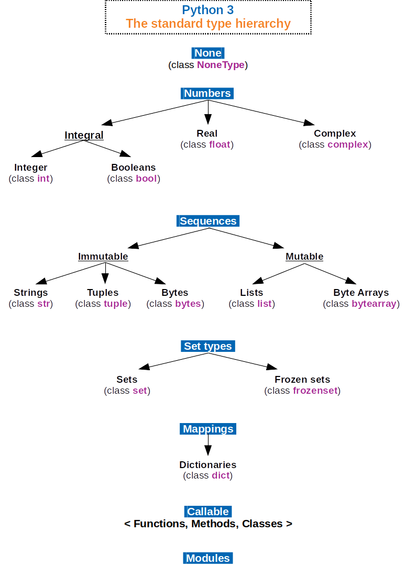

Module: Variables and Data
Learning Goals
- Understand the concept of data-centric programming.
- Understand the distinction between data types and data structures.
- Become familiar with the most basic basic data types and their operations.
- Become familiar with the most basic basic data structures and their operations.
Learning Outcomes
- Describe the idea of programming from the perspective of Data Science.
- Know the distinction between a literal value and a variable.
- Know to assign a value to a variable.
- Know the names of primary data types in Python — floats, integers, booleans, and strings — and how to represent literal values for each.
- Know the basic operators, functions, and methods associated with each data type.
- Understand the distinction between and operator, function, and method.
- Know how to convert a value of one type to another.
- Know how to find our the type of value or variable.
- Know Python’s built-in data structures – tuples, lists, dictionaries, and sets.
- Know the basic operators, methods, and functions associated with each data structure.
- Understand the concept of an expression and its relation to literals, variables, operators, and functions.
Readings
- Lutz, Learning Python, Part II: Types and Operations, Chapters 4–9
- Katz and Katz 2019, Section 1, First Steps in Coding—Variables and Data Types
For reference: - Built-in Types (Official)
Reading: Data and Code
Code should be simple
An important principle for writing effective and intelligible code is that code should be simple — to quote Einstein, as simple as possible but no simpler.
- A contributing factor to code simplicity is how it is related to the data it is designed to process.
- This relationship depends largely on how the data are structured.
- A program is always written with data in mind — what kind of data it is and how it is structured.
Simplicity of code follows from the structure of data
There is a view among programmers which, although not orthodoxy, is commonplace.
- It is the idea that the complexity of a program — its algorithms — is a function of the quality of the data structure it processes.
- If a data structure is not well designed, algorithms may be excessively complex and hard to understand.
- However if a data structure is well designed, the algorithms that process them are more robust and intelligible.
Supporting References
Consider these quotes cited in an essay on Data Structures. by Igor Budasov, reproduced here:
Here’s a quote from Linus Torvalds in 2006:
I’m a huge proponent of designing your code around the data, rather than the other way around, and I think it’s one of the reasons git has been fairly successful . . . I will, in fact, claim that the difference between a bad programmer and a good one is whether he considers his [sic] code or his data structures more important. Bad programmers worry about the code. Good programmers worry about data structures and their relationships.
Which sounds a lot like Eric Raymond’s “Rule of Representation” from 2003:
Fold knowledge into data, so program logic can be stupid and robust.
Which was just his summary of ideas like this one from Rob Pike in 1989:
Data dominates. If you’ve chosen the right data structures and organized things well, the algorithms will almost always be self-evident. Data structures, not algorithms, are central to programming.
Which cites Fred Brooks from 1975:
Representation is the Essence of Programming
Beyond craftsmanship lies invention, and it is here that lean, spare, fast programs are born. Almost always these are the result of strategic breakthrough rather than tactical cleverness. Sometimes the strategic breakthrough will be a new algorithm, such as the Cooley-Tukey Fast Fourier Transform or the substitution of an n log n sort for an n 2 set of comparisons.
Much more often, strategic breakthrough will come from redoing the representation of the data or tables. This is where the heart of your program lies. Show me your flowcharts and conceal your tables, and I shall be continued to be mystified. Show me your tables, and I won’t usually need your flowcharts; they’ll be obvious.
Reading: Python Object Types
Python is organized into a hierarchy of object types. Sometimes, these are just call types.
Objects are the basic unit out of which the language is constructed.
We’ll learn about objects later – what they are and how to create your own – but for now just understand that they have two main things associated with them:
- First, they can contain data.
- Second, they can have behaviors, frequently in relation to the data they contain.

Data Types and Data Structures
Data types and data structures are kinds of objects.
Data types are atomic — they don’t contain other data types.
Data structures contain data types organized in a certain way.
Data Types
| name | type | literal |
|---|---|---|
int |
integer | 1 |
str |
string | "1", '1' |
float |
floating point (real) | 1. |
complex |
complex | 1j (imaginary component) |
bool |
boolean | True |
Data Structures
| name | mutable | constructor |
|---|---|---|
tuple |
no | (), tuple() |
list |
yes | [], list() |
dict |
yes | {} with key/value pairs, dict() |
set |
yes | {} with single values, set() |
Notebooks
Activity: In-Class Exercises
Click on the link below to open a web page that contains a slide deck with exercises.
For each exercise, read the prompt and attempt to provide an answer, usually in the form of code.
See the answers by clicking the down arrow in the lower right corner.
Go to the next exercise prompt by clicking on the right arrow.
Create a new notebook to store your work.
Quiz
Q1
(1 point) Which of the following are valid ways to run lines of Python code?
A. From within the GitHub website, by clicking on a Jupyter notebook.
B. From the command line, by typing in python, pressing return, and then interactively entering the lines.
C. From within a code cell in a Jupyter notebook running on Jupyter Lab.
D. From a text file, with a .py extension. as an argument to calling Python from the command line.
Q2
(1 point) What statement best describes the difference between data types and data structures?
A. There is no real difference; the expressions are interchangeable.
B. Data types refer to primitive kinds of data, whereas data structures organize data types into collections with specific organizational properties.
C. Data types refer to built-in objects, whereas data structures are imported.
D. Data types don’t have associated operators, whereas data types do.
Q3
(1 point) Which of the following items have corresponding Python data types?
A. Integers
B. Booleans
C. Characters (e.g. individual letters)
D. Reals
Q4
(1 point) What built-in Python function returns the object type (i.e. class name) of a value stored in the Python variable x?
A. class(x)
B. type(x)
C. id(x)
D. ord(x)
Q5
(1 point) Which of the following literals would Python interpret as integers? A. 1
B. 1.
C. “1”
D. +1
Q6
(1 point) What value does the following expression return: int(1.) == 1
True
False
Q7
(1 point) Which are valid constructors of a Python list named x?
A. x = []
B. x = list()
C. x = ()
D. x = {}
Q8
(1 point) Given the list x = [1, 2, 4, 8] what will the expression the following evaluate to? x[1:4]
A. [1, 2, 4, 8]
B. [2, 4, 8]
C. [1, 2, 4]
D. [1, 4]
Q9
(1 point) What value will the following expression evaluate to? [1, 2, 4] * 2
A. [2, 4, 8]
B. None # The * operator does not work with lists
C. [1, 2, 4, 1, 2, 4]
D. [1, 2, 4, 2]
Q10
(1 point) Which of the following are built-in Python data structures?
A. list
B. dict
C. set
D. tuple
Homework
To finish this module, complete this homework assignment.